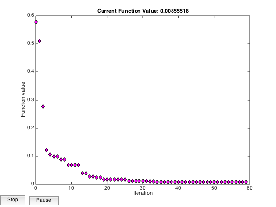
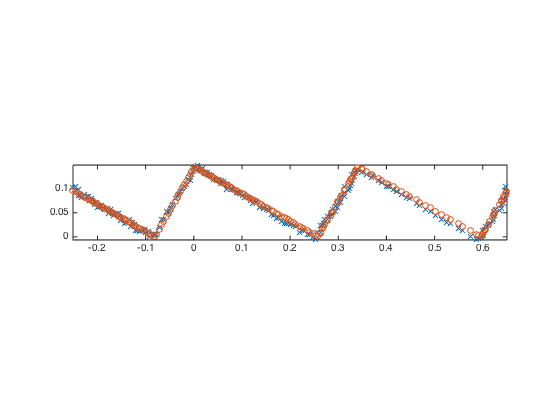

Contents
clear rosbag_wrapper;
clear ros.Bag;
clear all;
close all;
Load Rosbag
bag = ros.Bag.load('spiral/2015-03-11-22-16-30.bag');
bag.info();
Read all messages on /cloud_1
topic1 = '/cloud_1';
msgs = bag.readAll({topic1});
fprintf('Read %i messages\n', length(msgs));
Read 687 messages
Creat Transformed Pointcloud Vector
bag.resetView(topic1);
count = 0;
for count = 0:250;
msg = bag.read();
end
msg.points = msg.points(:,450:650);
M(1,:) = msg.points(2,:);
M(2,:) = -msg.points(1,:);
phi = -36*pi/180;
MT = M;
MT(1,:) = cos(phi)*M(1,:) - sin(phi)*M(2,:);
MT(2,:) = cos(phi)*M(2,:) + sin(phi)*M(1,:);
zi = MT(2,:);
xi = MT(1,:);
Initialize Variables for Stairparam Creation
h0 = .16;
t0 = .28;
dx0 = .13;
dz0 = .745;
t = t0;
h = h0;
dx = dx0;
dz = dz0;
zi = zi + dz;
Find z for x values
[v_r,se_r,z,exitflag,output] = stairparam(xi,zi,h,t,dx);
figure
subplot(3,1,2)
plot(xi,zi,'x');
axis equal tight
hold on
plot(xi,z,'o')
axis equal tight
0.1672
0.2946
0.0807
 